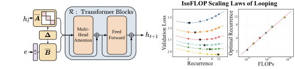
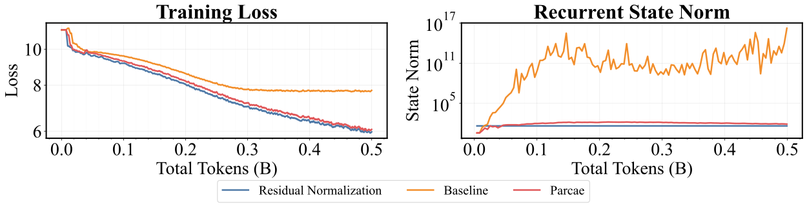
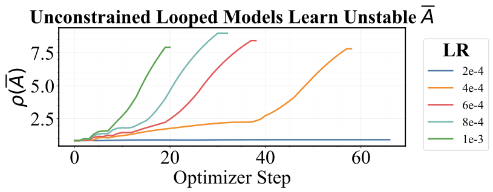
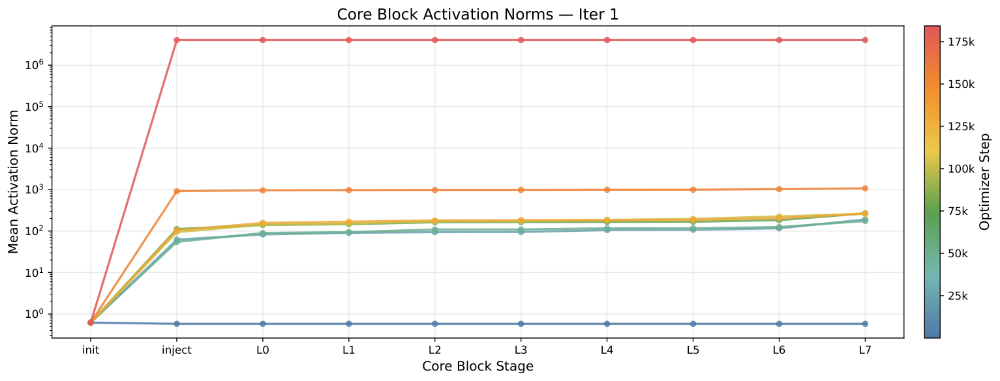
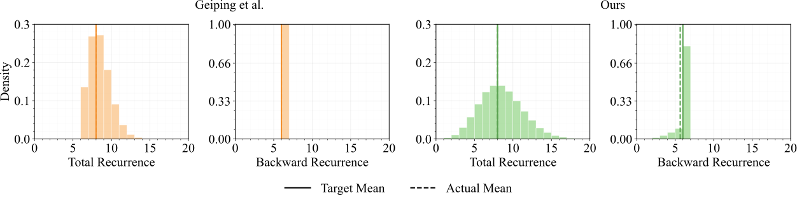
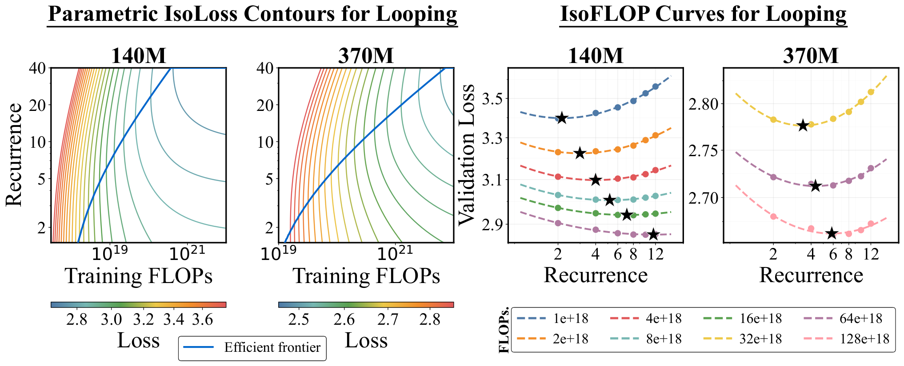
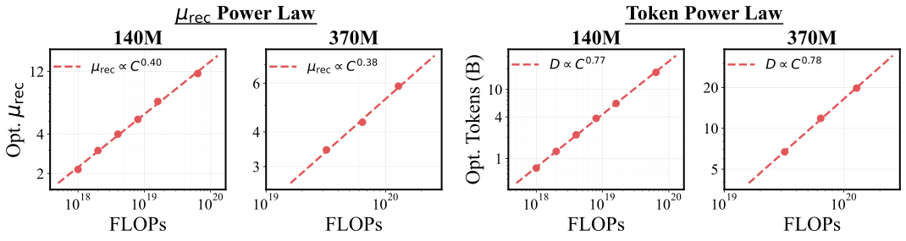
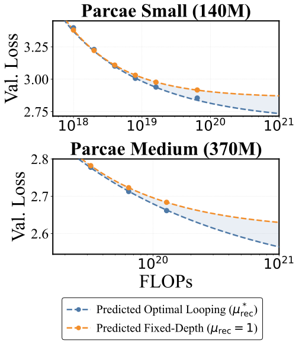
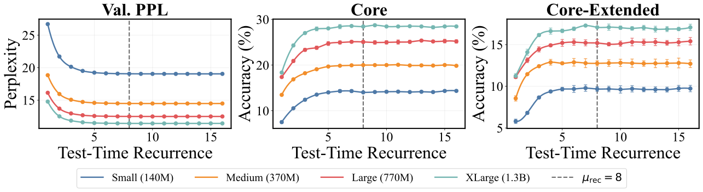
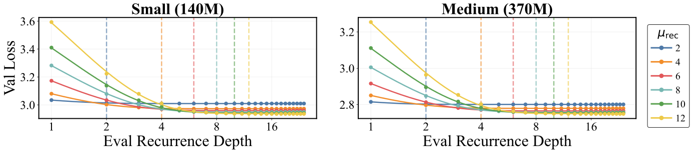

Parcae：稳定的循环语言模型及其扩展律
Parcae: Scaling Laws For Stable Looped Language Models
GitHub star 为 2026-10-19 的快照。阅读状态、进度与收藏只保存在你的浏览器里。
逐节精读
这部分按论文的章节顺序，用本站自己的话把整篇论文从头讲一遍，附录里对理解正文有用的内容（不稳定的诊断、采样算法、扩展律拟合细节）放进了对应的章节。读懂某个概念需要的背景知识，会在第一次用到它之前单独讲清楚（青色框）。每个结论都尽量说出“因为什么、所以什么”。论文以 CC BY 4.0 发布，所以原图直接放在讲到它的地方，并说明这张图怎么看；原图没画到的概念，用本站的示意图补上。标“推算”的数字是本站根据论文数据算出来的，不是论文原话。每节末尾有英文原文的链接。
0 导读：这篇论文解决什么问题
让语言模型变强，最常见的办法是加参数、加数据，两者都意味着训练时花更多的计算（FLOPs）。可是参数多了还有一个代价：部署时要把全部权重放进显存，模型越大，需要的机器越贵，也越难放到手机这类设备上。于是有人想到另一条路：循环模型（looped model）。它只保存一小组层，但让每个 token 的隐藏状态在这组层里来回走好几圈，这样每个 token 用到的计算变多了，参数量却不变。Huginn、Ouro 等工作已经表明，循环模型可以追上比自己更大的普通模型。
问题在于循环模型很难训。同一组层被反复使用，隐藏状态每转一圈都可能被放大一点，转上十几圈就可能变成天文数字（论文称之为“残差爆炸”），训练损失随之突然跳高甚至发散。以前的做法是靠额外的归一化层和小心挑选的学习率把它压住，但这需要反复试错。这篇论文换了一个角度：把“隐藏状态一圈一圈地更新”看成控制论里的动力系统，先把它线性化，再用经典的稳定性条件去检查。结论是：决定会不会爆炸的，是“把上一圈的状态带到下一圈”的那个矩阵的谱半径；以前的设计要么让它恰好等于 1，要么完全不约束它。作者提出的 Parcae 把这个矩阵设计成“连续时间的负对角矩阵再做离散化”，从结构上保证谱半径小于 1，再配上对输入的归一化和一种新的随机深度采样方式，训练就稳定了。
训练稳定之后，作者才能系统地问“循环到底值多少”。他们得到了三类结果：第一，在参数量和训练算力都固定时，最优的循环次数和训练数据量都随算力按幂律增长，循环是和数据并列的一个扩展维度；第二，测试时多转几圈，损失按“趋于饱和的指数衰减”下降，大约在训练时的平均圈数附近就不再改善；第三，在 1.3B 参数、约 100B token 的规模上，Parcae 比参数量和数据量都相同的 Transformer 的 Core 分高 2.99 分。
需要先说清楚的是：这些比较固定的是参数量和数据量，而不是计算量。一个平均转 8 圈的 Parcae，每个 token 的计算远多于同样参数的 Transformer（本站推算：训练约 2.4 倍，推理约 3.3 倍）。所以“比同参数 Transformer 好”说明循环能把额外的计算转化成质量，但不说明它在算力上更划算。第 5.5 节会把这件事算清楚。
读完这部分，你应该能回答这几个问题：
- 循环模型为什么会训炸？“残差爆炸”到底是什么东西在变大？
- 把循环写成残差流上的动力系统、再线性化以后，稳定性由什么决定？一个 2×2 的数值例子里，三种设计分别会发生什么？
- Parcae 的“负对角参数化 + 离散化”是什么意思，它和 Mamba 这类状态空间模型的离散化有什么关系？
- 固定参数量和训练算力时，应该多转几圈还是多看数据？论文拟合的幂律和参数化公式里，每个参数是什么意思？
- 测试时多转几圈有用吗？为什么会饱和？“饱和指数律”的三个参数各代表什么？
- “达到两倍大 Transformer 的 87.5%”是怎么算出来的？比较时固定了什么，没有固定什么？
1 引言：为什么要循环，循环又难在哪里
一个普通的 Transformer 有若干层，每一层有自己的一套权重。处理一个 token 时，这个 token 依次穿过每一层，每一层的权重都被用到一次。所以对普通模型来说，“参数有多少”和“每个 token 要算多少”几乎是绑在一起的：参数量记为 \(N\)，前向传播每个 token 大约要 \(2N\) 次浮点运算，训练（前向加反向）大约 \(6N\) 次，训练 \(D\) 个 token 的总计算量约为 \(C\approx 6ND\)。这就是常说的“6ND”估算。
显存则主要被两样东西占着：一是权重本身，和 \(N\) 成正比；二是推理时为每个已生成 token 存下的 KV 缓存，和“执行了多少层注意力”成正比（KV 缓存的来龙去脉见 vLLM 精读页）。
循环模型把这种绑定拆开了：同一组层被重复执行 \(T\) 次，权重只存一份，但每个 token 的计算量随 \(T\) 增长。打个比方，普通模型像一条有 24 台不同机器的流水线，零件每台机器过一遍；循环模型像一个只有 8 台机器的车间，让零件在中间几台机器上反复加工好几遍。车间占地（显存里的权重）小了，但机器的总工作时间（计算量）一点也没少，反而可能更多。
论文开头先交代动机。经典的扩展律告诉我们，模型质量随训练计算量可预测地提高，而提高计算量的常规方式是同时加参数和加数据。结果就是最先进的模型越来越宽、越来越深，部署时需要的显存也越来越大。与此同时，推理在总算力开销里的占比越来越高，越来越多的模型要部署到边缘设备上，所以“不加参数也能提高质量”的方法变得有吸引力。循环模型就是这样一种方法：它让激活值反复穿过同一组层。已有的结果很鼓舞人心：一些循环模型的质量追上了更大的固定深度模型（如 Huginn、Ouro），它们还显示出在隐空间里“多想几步”的潜力，以及按 token 分配不同计算量的可能。
但是包括作者在内的多方都观察到，这类模型的训练不稳定：隐藏状态会爆炸，损失会突然出现尖峰。因为被循环的是 Transformer 块这种复杂的非线性结构，很难从理论上说清楚不稳定从哪里来，所以以前的训练只能靠敏感的超参数选择和对残差流的归一化（比如 Post-Norm）把它压住。即使训练最终收敛，作者还观察到另一种损失尖峰，它来自训练时随机采样的循环深度（为了让模型在测试时能转不同的圈数，训练时每一批的圈数是随机抽的）。
所以作者要回答的问题是：如果把训练稳定下来，循环能不能成为一个可预测的、和参数、数据并列的扩展维度？

围绕这个问题，论文的贡献可以概括为三条：
- 端到端质量。在参数量和数据量都对齐的条件下，Parcae 比以前的循环模型（论文称为 RDM，即 Huginn 那一类 recurrent-depth model）验证困惑度最多低 6.3%；放大到 1.3B 参数、约 100B token 时，比参数量相同的 Transformer 在 Core 和 Core-Extended 两个基准上分别高 2.99 和 1.18 分。
- 训练算力的扩展律。在参数量固定、训练算力固定的条件下，比较“把算力花在多转几圈上”和“把算力花在多看数据上”，发现最优做法是两者一起增加，并且各自服从幂律。
- 测试时的扩展律。测试时增加圈数，损失按带下限的指数规律下降；再把训练时和测试时的规律合成一个统一的公式。
- 这里的“循环”“递归”（loop、recurrence）都是指沿深度方向重复使用同一组层，和 RNN 沿序列方向一个 token 一个 token 地递推不是一回事。论文把以 Huginn 为代表的这类模型叫 RDM（recurrent-depth model）。
- “测试时扩展”（test-time scaling）在这里指推理时多转几圈，而不是生成更长的思维链。
- 论文里的“稳定”有两层意思：一是训练过程不发散、没有损失尖峰；二是控制论意义上的稳定，即线性化后的系统状态不会无限增长。第 3 节会说明作者如何用后者去解释前者。
2 背景：中间循环架构、线性时不变系统与扩展律
2.1 中间循环架构：前奏、循环块、尾声
现代 Transformer 的每一层都是“读一份、改一点、加回去”：设进入这一层的向量是 \(x\)，这一层先对 \(x\) 做归一化，再算注意力或前馈网络，最后把算出来的结果加回 \(x\) 上，即 \(x\leftarrow x+f(\mathrm{LN}(x))\)。贯穿所有层、不断被加上新内容的这个向量，常被称为残差流（residual stream）。把它展开，最后一层的隐藏状态等于最初的嵌入加上每一层各自的输出之和，所以可以把残差流看成各层之间传递信息的一条公共通道。
“先归一化再计算、结果加回未归一化的 \(x\)”的写法叫 Pre-Norm，它的特点是残差流本身从不被归一化，数值可以随层数慢慢变大。如果在加回之后再对整条残差流做一次归一化，就叫 Post-Norm；Huginn 用的是两者结合的“三明治”写法：
这里每一步加完都再做一次 LN，所以残差流的大小被强行拉回固定范围，自然就不会爆炸。代价是这种结构对学习率等超参数很敏感（第 3 节的表 2 会看到）。
论文聚焦的是中间循环（middle-looped）架构。它由三段组成：开头的前奏 \(\mathcal{P}\)（prelude）、中间被循环的循环块 \(\mathcal{R}\)、最后的尾声 \(\mathcal{C}\)（coda）。给定一串 token \(s\)，前向计算是：
直观地说，前奏把 token 映射到隐空间，得到每个位置的表示 \(e\)；循环块拿着 \(e\) 作为条件，把隐藏状态 \(h_t\) 反复更新 \(T\) 次；尾声根据最终状态 \(h_T\) 输出下一个 token 的概率。初始状态 \(h_0\) 是随机抽的，这个做法来自 Huginn，背后的想法是：如果模型最终收敛到的状态与起点无关（所谓“路径无关”），说明它学到了稳定的不动点，测试时多转几圈才有意义。
关键的设计点是 \(e\) 怎么注入每一圈。以前有两种做法：一种是相加，\(h_{t+1}=\mathcal{R}(h_t+e)\)（Yang 等人的循环 Transformer）；另一种是拼接后投影，\(h_{t+1}=\mathcal{R}(W[h_t;e])\)，其中 \(W\) 是一个 \(d\times 2d\) 的可学习矩阵（Huginn 的做法）。第 3 节会看到，这两种做法在稳定性上的差别正是问题所在。每一圈都重新注入 \(e\) 的一个常见理由是：循环块转很多圈之后可能会“忘掉”原始输入，每圈都把输入喂一次，能让最终状态始终依赖于输入。
现代循环模型还允许可变深度：训练时，每一批数据的圈数 \(T\) 从一个分布 \(\Lambda\) 中随机抽取（比如均值为 \(\mu_{\text{rec}}\) 的泊松分布），这样模型见过各种深度，测试时才能自由选择转几圈。训练目标因此是对数据和圈数两者取期望。另外，反向传播穿过所有圈太耗显存，所以通常只对最后 \(\mu_{\text{bwd}}\) 圈求梯度，前面的圈只做前向，这叫沿深度的截断反向传播，类似 RNN 里的截断 BPTT。
以前的工作在几个设计维度上各有选择：循环块放在开头、中间还是末尾；用显式的路由器决定何时停，还是靠随机深度隐式地学；只循环一个块还是分层循环；用显式反向传播还是隐式微分（如深度平衡模型 DEQ）。这篇论文只研究其中一类：中间循环、隐式停止、显式反向传播。中间循环的选择有依据，Saunshi 等人比较过发现循环中间部分最有效。
2.2 线性时不变系统：稳定性由特征值决定
先看最简单的一维情形：\(h_{t+1}=a\,h_t+b\)，从 \(h_0=0\) 出发，\(b=1\)。
- \(a=0.5\)：\(h\) 依次是 1、1.5、1.75、1.875……，越来越接近 \(b/(1-a)=2\)。这个极限叫不动点：一旦到达，再转一圈也不变。
- \(a=1\)：\(h\) 依次是 1、2、3、4……，每圈加一个 \(b\)，线性增长，没有上限。
- \(a=1.2\)：\(h\) 依次是 1、2.2、3.64、5.37……，增长越来越快，按 \(1.2^t\) 指数爆炸。
所以一维时一切由 \(|a|\) 和 1 的大小关系决定。换成向量 \(h\) 和矩阵 \(A\) 时，如果 \(A\) 是对角矩阵，每个分量各自按自己的对角元乘下去，最大的那个对角元说了算。一般的矩阵可以找到一些特殊方向（特征向量），沿这些方向 \(A\) 的作用就是乘一个数（特征值 \(\lambda\)）。反复乘 \(A\) 很多次以后，增长最快的是绝对值最大的特征值，这个最大绝对值叫谱半径，记作 \(\rho(A)=\max_i|\lambda_i|\)。
还有一个容易和它混淆的量：谱范数 \(\|A\|_2\)，即 \(A\) 的最大奇异值，表示乘一次 \(A\) 最多能把一个向量拉长多少倍。总有 \(\rho(A)\le\|A\|_2\)；对角矩阵和对称矩阵两者相等，一般矩阵可能差很多（第 3 节有例子）。谱半径管“长期每圈平均放大多少”，谱范数管“单独一圈最多放大多少”。
控制论里，线性时不变（LTI）系统用一阶微分方程描述：
其中 \(h\) 是状态，\(e\) 是外部输入，\(A\) 决定状态自身怎么演化，\(B\) 决定输入怎么影响状态，\(C\) 把状态投影成输出。“线性”指右边只有矩阵乘法，“时不变”指 \(A,B,C\) 不随时间变化。连续系统可以用一个步长 \(\Delta\) 离散化成按步递推的形式 \(h_t=\overline{A}h_{t-1}+\overline{B}e_t\)。常用的零阶保持（ZOH）离散化给出
“零阶保持”这个名字的意思是：假设在一个步长 \(\Delta\) 之内，输入 \(e\) 保持不变（像台阶一样），然后把这段时间里的微分方程精确地解出来。以一维为例，\(\dot h=ah+be\) 在 \(e\) 不变时的精确解是 \(h(t+\Delta)=e^{a\Delta}h(t)+\frac{e^{a\Delta}-1}{a}\,b\,e\)，上面的公式就是它的矩阵版本。
LTI 系统分三种情况：稳定（状态有界并收敛）、临界稳定（状态不衰减，可能振荡或在有输入时持续累积）、不稳定（状态爆炸发散）。判别标准只看特征值：连续系统要求 \(A\) 的特征值实部为负；离散系统要求 \(\rho(\overline{A})<1\)，\(\rho(\overline{A})>1\) 就不稳定。两条标准其实是一回事：如果 \(A\) 的特征值 \(\lambda\) 实部为负，那么对任何正的步长 \(\Delta\)，\(|e^{\Delta\lambda}|=e^{\Delta\,\mathrm{Re}\lambda}<1\)。
2.3 扩展律是怎么拟合的
Hoffmann 等人（Chinchilla）研究“给定训练算力 \(C\)，参数量 \(N\) 和数据量 \(D\) 怎么分配最好”。他们用了两种方法，这篇论文都照搬了。
抛物线拟合（isoFLOP）。固定一个算力预算，训练一组不同 \(N\)（相应地 \(D=C/6N\)）的模型，画出验证损失对 \(\log N\) 的曲线，通常是一个开口向上的“碗”。用二次函数拟合这个碗，最低点就是这个预算下的最优 \(N^*\)。换几个预算重复，把 \(N^*\) 对 \(C\) 画在对数坐标上，如果是直线，就得到幂律 \(N^*\propto C^{a}\)。Chinchilla 发现 \(a\) 和 \(D^*\) 的指数都约为 0.5，即算力翻 4 倍，参数和数据各翻 2 倍。
参数化拟合。直接假设损失的函数形式
其中 \(E\) 是不可约损失（模型和数据都无穷大时也降不下去的部分），\(X N^{-x}\) 是“模型不够大”带来的额外损失，\(Y D^{-y}\) 是“数据不够多”带来的额外损失。五个参数用 Huber 损失（一种对离群点不敏感的误差度量）在对数损失上拟合，优化器用 L-BFGS。拟合好之后，就能预测没训练过的 \(N,D\) 组合的损失。
这篇论文做的事情是：把参数量 \(N\) 固定住，把扩展的维度换成平均圈数 \(\mu_{\text{rec}}\)。也就是说，在同一个模型尺寸下，比较“用这份算力多转几圈、少看点数据”和“少转几圈、多看点数据”，看最优点怎么随算力移动。第 6 节会详细讲。
3 不稳定从哪里来：把循环看成残差流上的动力系统
先看现象。作者训练了三种配置：Pre-Norm 的 RDM（即 Huginn 式拼接注入、但不做残差归一化，论文称为 Baseline）、带残差归一化的 RDM（Huginn 的三明治写法，Res. Norm），以及 Parcae。

3.1 把前向传播改写成动力系统
作者的关键一步是改写循环块的更新式。以前的注入方式都可以写成“先把 \(h_t\) 和 \(e\) 线性组合，再送进 Transformer 块”：\(h_{t+1}=\mathcal{R}(W_1h_t+W_2e)\)。相加注入就是 \(W_1=W_2=I\)；拼接注入 \(W[h_t;e]\) 就是把 \(W\) 拆成左右两半 \(W_1\) 和 \(W_2\)。
因为 Transformer 块带残差连接，它的输出等于“输入本身”加上“各子层算出来的增量”。把增量单独记为 \(\overline{\mathcal{R}}\)，即 \(\overline{\mathcal{R}}(h_t,e)=\mathcal{R}(W_1h_t+W_2e)-(W_1h_t+W_2e)\)，更新式就恒等地变成：
这一步没有做任何近似，只是换了个写法（推导在原文附录 C）。它的好处是把更新拆成了两部分：一个线性部分 \(\overline{A}h_t+\overline{B}e\)，和一个非线性部分 \(\overline{\mathcal{R}}\)（注意力、MLP 的全部贡献）。因为非线性部分依赖于当前状态，整个系统是“非线性时变”的。作者再加一个读出矩阵 \(\boldsymbol{C}\)，让尾声读的是 \(\boldsymbol{C}h_T\)，这样循环块内部的维度可以和尾声的维度解耦。
非线性部分无法直接分析，作者的做法是把它去掉，只看线性部分，得到一个离散 LTI 系统：
这里有一个和普通 LTI 系统不同的地方：输入 \(e\) 在每一圈都是同一个（前奏只算一次）。所以这是一个被常数输入驱动的系统，它的解可以直接写出来：
如果 \(\rho(\overline{A})<1\)，第一项随圈数衰减为零（初始状态被遗忘），第二项的几何级数收敛，状态收敛到一个只由输入决定的不动点；如果 \(\rho(\overline{A})=1\)，级数不收敛，常数输入会一圈圈累积起来；如果 \(\rho(\overline{A})>1\)，状态指数爆炸。
直接扔掉注意力和 MLP 听起来很粗暴，但在 Pre-Norm 结构里有一个合理的理由。Pre-Norm 的每个子层看到的是归一化之后的输入 \(\mathrm{LN}(x)\)，不论 \(x\) 本身有多大，送进子层的向量大小都差不多，所以子层输出的增量大致有界，不会随 \(\|h\|\) 成比例地变大。于是当 \(\|h\|\) 已经很大时，决定下一圈 \(\|h\|\) 的主要是线性项 \(\overline{A}h_t\)：只要 \(\overline{A}\) 会放大，状态就会一圈圈按几何级数增长，非线性部分拉不回来。这是本站的解读，论文没有这样论证；论文的依据是下面的实验（以及附录 J 里“非线性部分对爆炸几乎没有贡献”的诊断）。
3.2 以前的两种设计落在哪里
| 注入方式 | \(\overline{A}\) | \(\overline{B}\) | 谱半径 | LTI 稳定性 |
|---|---|---|---|---|
| 相加 \(\mathcal{R}(h_t+e)\) | \(I\) | \(I\) | \(\rho=1\) | 临界稳定 |
| 拼接 \(\mathcal{R}(W[h_t;e])\)（Huginn） | 任意 \(d_h\times d_h\) 矩阵 | 任意 \(d_h\times d_e\) 矩阵 | 不受约束，可以大于 1 | 不稳定 |
| Parcae | 负对角矩阵的 ZOH 离散化 | 任意矩阵的欧拉离散化 | \(\rho<1\) | 稳定 |
据原文表 1 整理。
相加注入的 \(\overline{A}=I\)，所有特征值都是 1，属于临界稳定：没有输入时状态不会变大也不会变小，但在“每圈都加同一个 \(e\)”的情况下，\(e\) 会被一圈圈累积。拼接注入的 \(\overline{A}=W_1\) 是一个完全自由的可学习矩阵，训练过程中它的谱半径可以涨到大于 1，这时线性部分本身就不稳定。
3.3 一个 2×2 的数值例子
为了直观，本站取二维状态，常数输入 \(\overline{B}e=(1,1)^\top\)，初始状态 \(h_0=0\)，比较三个 \(\overline{A}\)：
- Parcae 型：\(\overline{A}=\begin{pmatrix}0.9&0\\0&0.5\end{pmatrix}\)，对角元都在 0 和 1 之间，\(\rho=\|\overline{A}\|_2=0.9\)。
- 相加型：\(\overline{A}=I\)，\(\rho=1\)。
- 拼接型：\(\overline{A}=\begin{pmatrix}0.8&0.6\\0.4&0.7\end{pmatrix}\)。它的每个元素都小于 1，看起来很“温和”，但两个特征值是 \(1.24\) 和 \(0.26\)（由迹 1.5、行列式 0.32 解出），所以 \(\rho=1.24>1\)。
| 圈数 \(t\) | 1 | 2 | 4 | 8 | 16 | 32 |
|---|---|---|---|---|---|---|
| Parcae 型 \(\|h_t\|\) | 1.41 | 2.42 | 3.92 | 6.03 | 8.39 | 9.9 |
| 相加型 \(\|h_t\|\) | 1.41 | 2.83 | 5.66 | 11.31 | 22.63 | 45.3 |
| 拼接型 \(\|h_t\|\) | 1.41 | 3.19 | 8.17 | 27.75 | 185.67 | 6173.8 |
本站推算（逐圈迭代 \(h_{t+1}=\overline{A}h_t+(1,1)^\top\)）。
三条曲线把表 1 的三种情况具体化了。Parcae 型的状态收敛到不动点 \((I-\overline{A})^{-1}(1,1)^\top=(10,2)^\top\)；相加型每圈多一份输入，32 圈后范数是 45；拼接型 8 圈后已经是 28，32 圈后超过 6000，而真实模型的隐藏维度是上千维、训练时会把 \(W_1\) 往任何方向推，只要谱半径越过 1，结果就是原文图 2 里的 \(10^{11}\)。
还有一个容易被忽略的细节：Parcae 型的不动点是 \((10,2)\)，比单圈的输入 \((1,1)\) 大了好几倍。这是因为对角元 0.9 意味着每圈只“遗忘”10% 的旧状态，常数输入会被放大 \(1/(1-0.9)=10\) 倍。即使系统是稳定的，它对输入的放大倍数也可以很大；对角元是 0.99 时就是 100 倍。这一点在第 4.1 节讲前奏归一化时会再出现。
3.4 实验证据：发散的训练学到了大于 1 的谱半径

| 学习率 | Baseline（Pre-Norm RDM） | Res. Norm RDM | Parcae |
|---|---|---|---|
| 2e-4 | 收敛 | 收敛 | 收敛 |
| 4e-4 | 发散 | 收敛 | 收敛 |
| 6e-4 | 发散 | 发散 | 收敛 |
| 8e-4 | 发散 | 发散 | 收敛 |
| 1e-3 | 发散 | 发散 | 收敛 |
据原文表 2 整理；完整训练曲线见原文附录 F 图 9。
这张表说明两件事。第一，Huginn 的残差归一化确实能救一部分训练，但只在学习率不超过 4e-4 时有效，学习率再大也会发散，这就是“需要敏感调参”的具体含义。第二，Parcae 在试过的五个学习率下全部收敛，对学习率的容忍范围大得多。作者的结论是：线性化分析给出的稳定条件是必要的，违反它（\(\rho\ge 1\)）的训练会出现状态爆炸，满足它的训练则不会。
论文还提到一个线性分析没有覆盖的现象：在大规模训练的后期（1.3B 模型训到 15 万步以后），即使 \(\overline{A}\) 已经被约束，仍然出现了损失尖峰。作者的解决办法是对输入 \(e\) 做归一化，第 4.1 节会讲诊断过程。
- 线性化只给出了一个“如果违反就很可能出事”的条件。\(\rho(\overline{A})<1\) 并不能从数学上保证带注意力和 MLP 的完整非线性系统一定稳定；论文的论证是“线性分析 + 实验”，不是严格证明。
- 表 2 的实验规模很小（只训练了 0.5B token 左右），比较的是“能不能收敛”，没有比较收敛后的质量。
- 表 1 把相加注入归为“临界稳定”，这是针对线性部分的判断。论文没有单独训练相加注入的模型来展示它的失败方式。
4 Parcae：从结构上保证稳定的循环架构
4.1 负对角参数化与离散化
S4、Mamba、Mamba-2 这一类序列模型的核心，就是 2.2 节那个连续 LTI 系统：每个通道有一个状态，按 \(\dot h=Ah+Bx\) 演化，\(x\) 是输入序列。为了在离散的 token 上计算，它们用一个可学习的步长 \(\Delta\) 做离散化。Mamba 的具体写法是：令 \(A=-\exp(A_{\log})\)（保证为负），\(\Delta=\mathrm{softplus}(\cdot)\)（保证为正），然后 \(\overline{A}=\exp(\Delta A)\) 用零阶保持，\(\overline{B}=\Delta B\) 用更简单的欧拉法。这样不管 \(A_{\log}\) 和 \(\Delta\) 被训练成什么值，\(\overline{A}\) 都落在 0 和 1 之间，沿序列的递推永远不会爆炸。
Parcae 借用的就是这套写法，只是把“时间轴”换了：在 SSM 里，一步是序列上的下一个 token；在 Parcae 里，一步是循环的下一圈。另外两个区别：Parcae 的 \(\Delta\) 是每个通道一个固定的可学习常数，不像 Mamba 那样随输入变化；输入 \(e\) 在每一圈都是同一个，不像 SSM 每一步读一个新 token。
Parcae 的参数化是：
其中 \(\texttt{log\_A}\in\mathbb{R}^{d_h}\) 和 \(\Delta\in\mathbb{R}^{d_h}\) 都是可学习的向量，\(\odot\) 表示逐元素相乘，\(B\) 是不受约束的可学习矩阵。在官方代码里，\(\Delta\) 由 \(\mathrm{softplus}\) 得到，所以总是正数；\(B\) 初始化为单位矩阵。把这几步连起来看：\(-\exp(\cdot)\) 保证 \(A\) 的每个对角元都是负数；\(\Delta\) 为正，所以 \(\Delta\odot A\) 每个元素都是负数；再取指数，\(\overline{A}\) 的每个对角元就严格落在 \((0,1)\) 里，于是 \(\rho(\overline{A})=\|\overline{A}\|_2<1\) 对任何参数值都成立。约束不是靠惩罚或截断“加上去”的，而是参数化方式让不稳定的区域根本到达不了。
代一组数感受一下。设某个通道的 \(\texttt{log\_A}=0\)，即 \(a=-1\)：
- \(\Delta=0.1\)：\(\overline{A}=e^{-0.1}=0.905\)，\(\overline{B}=0.1B\)。每圈保留 90% 的旧状态，只吸收一点点新输入，相当于“记性好、更新慢”。
- \(\Delta=1\)：\(\overline{A}=e^{-1}=0.368\)，\(\overline{B}=B\)。旧状态只留三分之一，新输入占主导。
- \(\Delta=3\)：\(\overline{A}=e^{-3}=0.050\)，\(\overline{B}=3B\)。几乎每圈都被输入重写。
所以每个通道的 \(\Delta\) 在学一件很直观的事：这个通道应该多大程度上保留上一圈的信息。
这张图解释了“ZOH 用于 \(A\)、欧拉法用于 \(B\)”的分工：稳定性只取决于 \(\overline{A}\)，所以 \(\overline{A}\) 必须用一个对任何步长都保号、保界的离散化，指数函数正好满足；\(\overline{B}\) 只是把输入缩放一下，用最简单的 \(\Delta B\) 即可。论文也说明，满足稳定条件的写法不止这一种，选对角负矩阵是因为它最简单、计算最便宜（逐元素相乘，不需要矩阵乘法）。
前奏归一化：约束了 \(\overline{A}\) 之后，1.3B 模型为什么还会炸。作者最初的配置在 140M、370M、770M 三个尺寸上都训练稳定，但 1.3B 的模型在前 15 万步一切正常，之后出现了状态爆炸和损失尖峰（原文附录 J 图 17）。他们按下面的顺序排查：
- 先查动力系统参数本身：训练全程 \(\overline{A}\) 和 \(\overline{B}\) 的谱范数都很平稳，\(\max\overline{A}\) 一直低于 1；读出矩阵 \(\boldsymbol{C}\) 的谱范数涨到了几百，但用真实激活测量，\(\boldsymbol{C}\) 实际把向量放大的倍数很小，而且在缓慢下降。所以问题不在这几个矩阵。
- 再看循环过程：测试时转 24 圈，记录每圈的状态范数，发现状态在第一圈就猛然跳高，之后反而大致稳定。
- 把第一圈拆开看，逐个记录注入之后和每个 Transformer 块之后的范数，发现跳变发生在“注入 \(e\)”那一步，后面的非线性块几乎没有贡献（下图）。
- 最后追到前奏内部：前奏里有一层的输出范数爆到了 \(10^6\) 以上，\(e\) 本身就是一个巨大的向量。

这和 3.3 节的线性分析是一致的：稳定的 \(\overline{A}\) 只能保证状态相对于输入有界，即 \(h^*=(I-\overline{A})^{-1}\overline{B}e\)；如果 \(e\) 本身变成了天文数字，状态照样是天文数字。所以修补方法很简单：在前奏的输出上加一个归一化层，\(e=\mathrm{LN}(\mathcal{P}(s))\)。作者认为它有两个作用：让送进循环块的输入大小固定，从而进一步稳定循环的动力学；同时稳定流向前奏的梯度（后一点论文明确说只是根据以往文献推断，没有直接验证）。加上它之后，1.3B 的训练稳定完成；它还让 140M 和 370M 的模型收敛得更好，对 770M 和 1.3B 的质量影响很小。
于是 Parcae 的完整更新规则是：
和对照模型怎么对齐。论文做了两套实验，每套都让 Parcae 尽量只在“该改的地方”不同：
- RDM 设置：架构照搬 Huginn，Parcae 和 RDM 只在两处不同，一是 Parcae 不用残差归一化（三明治 LN），二是多了 \(A,B,\boldsymbol{C},\Delta\) 这些动力系统参数。
- Transformer 设置：照搬 Karpathy 的 nanochat（一个精简但调得很好的 GPT 训练配方），Parcae 与 Transformer 架构完全相同，只是把中间三分之一的层拿出来循环，再加上动力系统参数和前奏归一化。这些新增参数占总参数的 0.35%～0.83%（原文表 19），可以忽略。
4.2 训练算法：按序列采样深度，修正截断采样
可变深度训练的目标是对圈数的分布取期望：
实际训练时，这个期望是用一批样本估计出来的。Huginn 的做法是每个 micro-batch 抽一个 \(T\)，这个 micro-batch 里所有序列都转这么多圈。问题是一个全局 batch 只由少数几个 micro-batch 组成，于是一次参数更新只“见过”寥寥几个深度，对期望的估计方差很大：某一步恰好抽到的都是很浅的深度，梯度就会往“适合浅深度”的方向猛推一下，下一步又被拉回来，这就是损失尖峰的来源之一。Parcae 改成每条序列各抽一个 \(T\)，一次更新里就包含了几百个不同深度的样本，期望估计得更准。
| ① 按 micro-batch 采样：同一个 micro-batch 里所有序列同一个深度 | ||||||||||||
| micro-batch 1，序列 a（T=6） | ||||||||||||
| micro-batch 1，序列 b（T=6） | ||||||||||||
| micro-batch 2，序列 c（T=11） | ||||||||||||
| micro-batch 2，序列 d（T=11） | ||||||||||||
| ② 按序列采样（论文算法 2）：各抽各的，对齐到本 micro-batch 的最大深度，浅的序列在前面“空转” | ||||||||||||
| 序列 a（T=4） | ||||||||||||
| 序列 b（T=9） | ||||||||||||
| 序列 c（T=12） | ||||||||||||
| 序列 d（T=7） | ||||||||||||
| 模型 | 采样方式 | T=1 | T=4 | T=8 | T=16 |
|---|---|---|---|---|---|
| 100M | 按 micro-batch | 300.32 | 36.75 | 16.65 | 13.81 |
| 按序列 | 70.47 | 17.15 | 14.08 | 13.59 | |
| 350M | 按 micro-batch | 167.61 | 12.80 | 10.40 | 10.24 |
| 按序列 | 17.92 | 10.49 | 10.09 | 10.11 |
验证集困惑度（越低越好），据原文附录 G 表 8；T 是测试时的圈数。
这张表最显眼的是浅深度的变化：350M 模型只转 1 圈时，困惑度从 167.61 降到 17.92，差了约 9.4 倍（推算）；转到训练时的平均深度附近，两者就很接近了。也就是说，按序列采样主要改善的是模型在“没转够圈数”时的表现，同时消除了训练中的损失尖峰（原文图 10）。作者还观察到，尖峰对应着最后一圈状态的跳动过大，说明模型没有学会收敛到不动点；按序列采样后这种跳动小了。作者报告这一改动只让总训练时间增加 1.8%。
在官方实现（parcae_lm/models/parcae/parcae.py 的 iterate_forward）里，按序列采样的做法是：整个 micro-batch 都按其中最大的抽样深度循环，每一圈对所有序列都做一次完整计算，再用掩码决定哪些序列的状态真正更新。所以 GPU 实际做的计算由 micro-batch 内的最大深度决定，而论文的 FLOPs 是按平均深度估算的名义值（见下文附录 D）。论文给出的 1.8% 是相对按 micro-batch 采样的总训练时间；本站没有核实这两件事在实际运行中如何对上。
修正截断反向传播的采样（附录 H）。Huginn 的采样算法先决定“只前向的圈数” \(n\)，再固定加上 \(\mu_{\text{bwd}}\) 个求梯度的圈：\(n\) 从均值为 \(\mu_{\text{rec}}-\mu_{\text{bwd}}\) 的泊松–对数正态分布中抽取再加 1，总圈数 \(T=n+\mu_{\text{bwd}}\)。这意味着训练时总圈数永远至少是 \(\mu_{\text{bwd}}+1\)，而且整个分布被挤到了均值附近。Parcae 改为先从 \(\Lambda(\mu_{\text{rec}})\)（泊松分布）抽总圈数 \(T\)，再令求梯度的圈数 \(k=\min(T,\mu_{\text{bwd}})\)、只前向的圈数 \(n=\max(T-\mu_{\text{bwd}},0)\)。这样总圈数忠实地服从目标分布，浅的深度也能被抽到。

作者用三个 100M 的 Parcae 模型（10B token，\(\mu_{\text{rec}}=\mu_{\text{bwd}}=8\)）验证了这个改动：完整反向传播、Huginn 采样、修正后的采样。三者在 \(T=8\) 时的损失几乎一样，但在 \(T=4\)、16、64 时，修正后的采样明显更接近完整反向传播的结果，Huginn 采样在 \(T=4\) 时差得最多。为了公平，论文正文里的 RDM 对照模型也换上了这个修正。
反向传播深度怎么选（附录 I）。作者早期做了两组 10B 级 token 的小实验。一组固定 \(\mu_{\text{bwd}}\)，把 \(\mu_{\text{rec}}\) 从 4 加到 32：验证损失在 \(\mu_{\text{rec}}=8\) 时最低（2.453），再加圈数反而略差（2.456～2.458），尽管花了更多算力。另一组固定 \(\mu_{\text{rec}}=20\)，把 \(\mu_{\text{bwd}}\) 从 4 加到 12：损失从 2.500 单调降到 2.474，但从 10 到 12 几乎不再改善。结论是“能用好多少圈”和“反向传播穿过多少圈”紧密相关，于是全文统一取 \(\mu_{\text{bwd}}=\lceil\mu_{\text{rec}}/2\rceil\)。（这组实验早于上面的采样修正，论文对固定的 \(\mu_{\text{bwd}}\) 是 4 还是 8 前后写法不一致。）
FLOPs 怎么算（附录 D）。对普通模型用 \(C=6ND\)。循环模型要用“展开后的有效参数量”：把循环展开成普通网络时有多少参数。由于截断反向传播，有效参数分成两类：只做前向的 \(\hat N_1\)（每 token 约 2 倍 FLOPs）和要反向传播的 \(\hat N_2\)（约 6 倍），所以
其中不计嵌入层参数、计入输出层参数，并另外加上注意力的 FLOPs。这是第 6 节扩展律横轴上“FLOPs”的含义。
- Parcae 不是一个单一的技巧，而是四个改动的组合：约束 \(\overline{A}\)、前奏归一化、按序列采样深度、修正截断采样。第 5 节的表 4 会显示它们各自的作用。
- “去掉残差归一化”是 Parcae 相对 Huginn 的一个简化，作者的论点是：只要线性部分稳定，就不需要靠三明治 LN 压住残差流。
- \(\mu_{\text{bwd}}=\lceil\mu_{\text{rec}}/2\rceil\) 是经验选择，论文明确把“FLOPs 最优的 \(\mu_{\text{rec}}\) 与 \(\mu_{\text{bwd}}\) 组合”留作以后的工作。
5 实验一：端到端质量
5.1 实验是怎么设计的
困惑度（perplexity，PPL）是验证损失（每个 token 的平均负对数似然，单位 nat）取指数：\(\mathrm{PPL}=e^{\mathcal{L}}\)。可以把它理解成“模型在每个位置平均要在多少个等可能的候选里猜”，越低越好。困惑度相差 5%，对应的损失只相差约 \(\ln 1.05\approx0.05\) nat。
Core 和 Core-Extended 来自 DCLM（DataComp-LM）的评测套件，nanochat 也用它。每个任务先算准确率，再扣掉随机猜测的水平并归一化，nanochat 代码里的公式是 \((\text{acc}-r)/(1-r)\)，\(r\) 是随机基线。所以随机乱猜得 0 分、全对得 100 分，比随机还差就是负分。Core 是 DCLM 选出的一组方差较低的任务的平均，Core-Extended 是原文表 15 列出的全部任务（常识、世界知识、阅读理解、符号与数学推理等）的平均。小模型的这些分数普遍不高，比如 140M 模型的 Core 在 13 分左右，所以“高 1 分”在这个量级上并不小。
论文做了两套对照实验：
- 对 RDM：照搬 Huginn 的数据和分词器，训练 100M 和 350M 两个尺寸。100M 的循环块 1 层、\(\mu_{\text{rec}}=16\)、反传 8 圈；350M 的循环块 2 层、\(\mu_{\text{rec}}=8\)、反传 4 圈；前奏和尾声各 1 层（原文表 17）。学习率只给 RDM 扫描（2e-4 到 1e-3），选出最好的值后 Parcae 直接沿用，不再单独调。
- 对 Transformer：用 nanochat 配方在 FineWeb-Edu 上训练 140M、370M、770M、1.3B 四个尺寸，Transformer 分别是 6、12、18、24 层，Parcae 的前奏、循环块、尾声各占三分之一，\(\mu_{\text{rec}}=8\)、反传 4 圈。训练 token 数分别是 11.2B、29.6B、61.6B、104B，两种模型完全相同（原文表 21），约为每个参数 78 个 token（推算），远多于 Chinchilla 建议的 20 个左右。学习率同样只为 Transformer 仔细扫描（小、中尺寸各扫了十多个值），Parcae 沿用。每个下游评测用 3 个随机种子（种子会改变循环的随机初始状态和少样本示例），表中给出均值和标准差。
5.2 和以前的循环模型（RDM）比
| 尺寸 | 模型 | T | 验证 PPL ↓ | WikiText PPL ↓ | HellaSwag | ARC-C | ARC-E | PIQA | BoolQ | SciQ | 平均 |
|---|---|---|---|---|---|---|---|---|---|---|---|
| 100M | RDM | 16 | 14.23 | 63.27 | 27.16 | 17.66 | 42.38 | 59.14 | 51.35 | 72.50 | 45.03 |
| Parcae | 16 | 13.59 | 60.33 | 27.18 | 18.09 | 43.10 | 59.30 | 61.83 | 71.50 | 46.83 | |
| 350M | RDM | 8 | 10.76 | 41.31 | 28.55 | 20.90 | 47.26 | 61.75 | 61.53 | 76.70 | 49.45 |
| Parcae | 8 | 10.09 | 37.53 | 29.23 | 21.08 | 48.78 | 62.08 | 60.73 | 78.80 | 50.12 |
据原文表 3；下游任务为零样本准确率（%）。
验证困惑度在 100M 和 350M 上分别降低 4.5% 和 6.2%，WikiText 困惑度分别降低 4.6% 和 9.1%（推算；论文正文写“最多 6.2% 和 9.1%”，摘要写 6.3%，是同一组数字的不同舍入）。下游平均分高 1.80 和 0.67 分。单项上各有输赢，比如 100M 的 BoolQ 高了 10 分，SciQ 却低了 1 分，这类小模型的单项分数波动较大，平均分更有参考价值。注意这里的 RDM 用的是 Huginn 的三明治残差归一化，并且已经用上了 Parcae 的采样修正。
5.3 稳定性消融：每个改动贡献了什么
为了看清每个改动的作用，作者把 140M 的 Transformer 改造成 RDM 式的循环模型，然后依次加上 Parcae 的各个改动：
| 配置 | 验证损失 T=1 | T=4 | T=8 | Core T=1 | T=4 | T=8 | Core-Ext T=1 | T=4 | T=8 |
|---|---|---|---|---|---|---|---|---|---|
| RDM | 训练发散 | ||||||||
| + 约束 \(\overline{A}\) | 8.99 | 3.15 | 2.97 | −2.0 | 11.0 | 13.2 | 0.5 | 7.8 | 9.1 |
| + 按序列采样 | 3.38 | 3.01 | 2.98 | 7.6 | 13.4 | 14.0 | 5.9 | 9.3 | 9.9 |
| + 前奏归一化 | 3.28 | 2.97 | 2.95 | 7.5 | 13.5 | 14.0 | 5.8 | 9.4 | 9.7 |
据原文表 4（Core 分数的标准差在 0.0～0.5 之间，此处省略）。每一行在上一行的基础上累加改动。
读法是一行一行往下看。第一行：不做任何改动的 RDM 在这个设置下直接发散。第二行：只约束 \(\overline{A}\)，训练就能收敛，\(T=8\) 时的损失已经是 2.97；但只转 1 圈时损失高达 8.99，Core 是 −2.0，比随机猜还差，说明模型完全依赖转够圈数。第三行：换成按序列采样，\(T=1\) 的损失从 8.99 降到 3.38，Core 从 −2.0 升到 7.6，浅深度的表现大幅改善，\(T=8\) 时基本不变。第四行：再加前奏归一化，三个深度的损失都再降一点（\(T=8\) 时到 2.95）。这和 4.2 节的分析吻合：约束 \(\overline{A}\) 解决“能不能训”，按序列采样解决“浅深度能不能用”，前奏归一化提高整体质量和后期稳定性。
5.4 和参数量相同的 Transformer 比
| 尺寸 | 模型 | T | 验证 PPL ↓ | LAMBADA PPL ↓ | Core ↑ | Core-Extended ↑ |
|---|---|---|---|---|---|---|
| 140M | Transformer | – | 21.48 | 127.39 | 13.00 ± 0.15 | 8.80 ± 0.21 |
| Parcae | 8 | 19.06 | 80.64 | 14.04 ± 0.20 | 9.67 ± 0.28 | |
| 370M | Transformer | – | 15.79 | 40.77 | 17.46 ± 0.03 | 11.71 ± 0.22 |
| Parcae | 8 | 14.49 | 32.74 | 20.00 ± 0.06 | 12.75 ± 0.31 | |
| 770M | Transformer | – | 13.08 | 22.37 | 22.42 ± 0.20 | 14.20 ± 0.63 |
| Parcae | 8 | 12.49 | 19.71 | 25.07 ± 0.33 | 15.19 ± 0.43 | |
| 1.3B | Transformer | – | 11.95 | 17.26 | 25.45 ± 0.08 | 15.90 ± 0.23 |
| Parcae | 8 | 11.42 | 14.71 | 28.44 ± 0.28 | 17.08 ± 0.09 |
据原文表 5。两种模型参数量相同（Parcae 多 0.35%～0.83%），训练数据相同。
四个尺寸上 Parcae 都更好。Core 分别高 1.04、2.54、2.65、2.99 分，Core-Extended 分别高 0.87、1.04、0.99、1.18 分（推算）。摘要里的“2.99 和 1.18”就是 1.3B 这一行。验证困惑度分别低 11.3%、8.2%、4.5%、4.4%（推算），可以看到困惑度的相对优势随尺寸变大而缩小，Core 的绝对优势则没有缩小。
“87.5%”是怎么算的。作者用了一个“填补差距的比例”来衡量参数效率：拿某个尺寸的 Parcae，看它比同尺寸 Transformer 多出来的分数，占“下一个更大的 Transformer 比这个尺寸的 Transformer 多出来的分数”的多少。以论文自己举的 140M、Core-Extended 为例：
也就是说，140M 的 Parcae 把“从 140M Transformer 走到 370M Transformer”的这段路走了 29.9%。按同样的方法，本站把三个可算的尺寸都算了一遍：
| Parcae 尺寸 | 对照的更大 Transformer | Core 填补比例 | Core-Ext 填补比例 | Parcae 的 Core ÷ 更大 Transformer 的 Core |
|---|---|---|---|---|
| 140M | 370M | 23.3% | 29.9% | 80.4% |
| 370M | 770M | 51.2% | 41.8% | 89.2% |
| 770M | 1.3B | 87.5% | 58.2% | 98.5% |
本站推算，结果与论文给出的范围（Core 23.3%～87.5%，Core-Extended 29.9%～58.2%）一致。1.3B 的 Parcae 没有更大的 Transformer 可比，所以不在表中。
所以 87.5% 这个数字有三点要读准：第一，它来自 770M 的 Parcae 对 1.3B 的 Transformer，而不是 1.3B 的 Parcae；1.3B 对 770M 的参数比是 1.72 倍，“两倍大”是取整的说法。第二，它是“填补差距的比例”，不是“分数的比例”：770M Parcae 的 Core 是 25.07，1.3B Transformer 是 25.45，分数之比是 98.5%。第三，它只在 Core 上成立，同一对模型在 Core-Extended 上只填补了 58.2%，困惑度上 770M Parcae（12.49）也不如 1.3B Transformer（11.95）。
5.5 结果的份量
这一节的结论是可信的，但它回答的问题比标题窄。下面把“固定了什么、没固定什么”逐项说清楚。
固定了什么。参数量（Parcae 只多 0.35%～0.83%）、训练数据（同一数据集、同样的 token 数）、架构细节和优化器设置（nanochat 配方，学习率只为对照模型调过，Parcae 直接沿用，这对 Parcae 是不利的）。所以“同参数、同数据下 Parcae 更好”这个结论站得住。
没有固定什么。计算量、推理延迟和 KV 缓存。Parcae 平均转 8 圈，中间三分之一的层要执行 8 次，所以每个 token 的计算多得多。本站按“每层非嵌入参数约 \(12d^2\)，FLOPs 正比于实际执行的层数”粗算（不计嵌入、输出层和注意力的二次项，不计随机深度和 micro-batch 内对齐到最大深度的额外开销）：
换句话说，1.3B 的 Parcae 训练时花了同尺寸 Transformer 约 2.4 倍的算力，推理时每个 token 约 3.3 倍的算力和 KV 缓存，换来 Core 高 2.99 分。至于“770M Parcae 接近 1.3B Transformer”这一对：按同样的算法，770M Parcae 的训练算力约为 1.3B Transformer 的 0.75 倍（它只训练了 61.6B token，后者训练了 104B），但推理时每个 token 的算力约为 1.74 倍、KV 缓存约为 2.08 倍（推算）。所以它省的是显存里的权重，不是推理算力。
放到其他研究里校准。同一批精读里有两篇专门在算力对齐条件下衡量循环的论文，可以用来校准这里的结论：
- Iso-Depth（2604.21106）固定执行的层数（因而推理 FLOPs 和 KV 缓存也相同），只减少独立参数，测得在训练算力相同时，一次循环约相当于 0.46 个独立的块（95% 置信区间 0.41～0.53）；它的例子是 410M 的模型循环 4 次能追上 580M 的普通模型，但训练花费和 1B 模型一样多。也就是说，在算力对齐时循环是“亏”的，它的好处主要体现在参数（显存）上。
- SMELT（2609.01343）在 MoE 上同时对齐每 token FLOPs、总参数和 KV 缓存，发现只循环中间一半层两次，可以在计算最优前沿上省 6.8%～18.0% 的训练算力。这是循环在严格对齐下仍有收益的例子，但收益的量级远小于“追上两倍大模型”给人的印象。
规模与对照组的性质。最大的模型是 1.3B 参数、104B token，扩展律只在 140M 和 370M 两个尺寸上拟合。两个对照组都是作者按公开配方自己训练的：RDM 是照 Huginn 的配方复现的，不是 Huginn 本身的 3.5B 检查点；Transformer 是 nanochat 风格的基线，不是外部发布的模型。好在 Transformer 基线的学习率经过了比 Parcae 更仔细的扫描，这一点降低了“基线没调好”的担心。
开放程度与复现。训练代码（MIT 许可）和四个尺寸的权重都已公开。截至 2026-10-19，本站没有找到已发表的独立复现；ICLR 2027 的匿名投稿 ARLoop（审稿中，数字可能修改）在 140M、370M 上把 Parcae 作为对照重新实现过，固定圈数训练，困惑度比普通 Pre-Norm 循环基线低（例如 140M、3 圈时 16.60 对 16.91），说明它的稳定化在别人的代码里也有效。
6 实验二：训练时，循环是和数据并列的扩展维度
6.1 实验设计：固定参数和算力，扫圈数
作者在 nanochat 设置下训练 140M 和 370M 两个尺寸的 Parcae。每个尺寸选几档训练算力：140M 是 \(\{1,2,4,8,16,64\}\times10^{18}\) FLOPs，370M 是 \(\{32,64,128\}\times10^{18}\)。每一档算力下，平均圈数 \(\mu_{\text{rec}}\) 取 2、4、6、8、10、12，圈数越多，每个 token 越贵，能训练的 token 就越少，这样每个模型都正好花完这一档的算力。140M 一共训练了 36 个模型，370M 训练了 18 个，每个模型在 \(T=\mu_{\text{rec}}\) 时评测验证损失。

6.2 最优圈数和最优数据量都服从幂律

写成公式就是：
指数的意思可以用一个例子说明（推算）：算力扩大 10 倍时，最优圈数应该扩大 \(10^{0.40}\approx2.5\) 倍，最优数据量应该扩大 \(10^{0.78}\approx6.0\) 倍。两者都要增加，所以论文说“循环和数据应该一起增加”；但数据增加得更快，多出来的算力大部分应该花在数据上。
你可能注意到两个指数加起来约 1.18，大于 1。对普通模型，如果每个 token 的计算量正比于参数量，\(N^*\) 和 \(D^*\) 的指数加起来必须等于 1（因为 \(C\propto ND\)）。这里不必如此，原因是每个 token 的计算量并不正比于圈数：前奏和尾声的开销与圈数无关，而截断反向传播让多出来的那些圈只做前向（每 token 2 倍而不是 6 倍）。所以圈数翻倍时，每 token 的成本不到翻倍，同样的算力能多容纳一些数据。这是本站对指数的解读，论文没有讨论。
6.3 参数化公式：用“展开后的参数量”代替参数量
作者仿照 Chinchilla 写了一个参数化的损失公式，只是把参数量换成“把循环全部展开成普通网络时的参数量” \(N(\mu_{\text{rec}})\)：
每个尺寸单独拟合一组参数（Huber 损失加 L-BFGS，500 次随机重启，每次最多 10,000 步迭代）：
| 模型 | \(E\) | \(X\) | \(x\) | \(Y\) | \(y\) | Huber 损失（×10⁻⁴） |
|---|---|---|---|---|---|---|
| 140M | 2.662 | 522733.307 | 0.771 | 25420.102 | 0.525 | 0.44 |
| 370M | 2.439 | 832134.346 | 0.775 | 6386.865 | 0.448 | 0.01 |
据原文附录 K 表 11（论文附录里把 \(X,Y,x,y\) 写作 \(A,B,a,b\)，与动力系统的 \(A,B\) 无关）。
每个参数的含义：
- \(E\) 是这个尺寸下的“地板”：圈数和数据都趋于无穷时，损失也降不到它以下。值得注意的是 140M 的 \(E=2.662\) 明显高于 370M 的 \(E=2.439\)。在 Chinchilla 里 \(E\) 代表文本本身的熵，对所有尺寸相同；这里 \(E\) 按尺寸分别拟合，它还包含了“独立参数只有这么多”的限制。换句话说，在固定参数量下无限地加圈数和数据，也追不上一个更大的模型能达到的水平（这是本站对表 11 的解读）。
- \(X\cdot N(\mu_{\text{rec}})^{-x}\) 是“转的圈数不够”带来的额外损失，\(x\approx0.77\) 表示展开后的参数量翻倍时，这一项变成原来的 \(2^{-0.771}\approx0.59\) 倍（推算）。
- \(Y\cdot D^{-y}\) 是“数据不够”带来的额外损失，140M 的 \(y=0.525\) 表示数据翻倍时这一项变成原来的 \(2^{-0.525}\approx0.70\) 倍。代入 140M、11.2B token，这一项约为 0.13 nat（推算）。
拟合好坏用没参与拟合的模型来检验：用这个公式预测第 5 节表 5 里那些 \(\mu_{\text{rec}}=8\)、固定数据量训练的 140M 和 370M 模型，误差分别是 1.3% 和 0.8%。
6.4 同样的算力，循环比不循环好吗
作者在每档算力下还训练了 \(\mu_{\text{rec}}=1\) 的 Parcae（参数量相同但不循环，算力全部用来看数据），和最优圈数的模型对比。

| 尺寸 | 算力（×10¹⁸） | 最优 \(\mu_{\text{rec}}^*\) | 循环：Core | Core-Ext | 不循环：Core | Core-Ext |
|---|---|---|---|---|---|---|
| 140M | 1 | 2 | 7.6 | 5.7 | 7.9 | 6.1 |
| 2 | 2 | 9.0 | 6.2 | 10.5 | 6.4 | |
| 4 | 4 | 11.2 | 8.4 | 10.7 | 8.1 | |
| 8 | 6 | 10.5 | 7.8 | 11.8 | 7.7 | |
| 16 | 8 | 14.6 | 9.8 | 13.0 | 8.8 | |
| 64 | 10 | 16.2 | 11.0 | 15.0 | 9.5 | |
| 370M | 32 | 4 | 15.2 | 10.1 | 16.8 | 11.2 |
| 64 | 6 | 18.1 | 11.6 | 18.1 | 12.1 | |
| 128 | 6 | 20.1 | 13.0 | 18.1 | 12.0 |
据原文表 6（附录 N 表 16 另有标准差，0.0～0.5）。表中的最优 \(\mu_{ ext{rec}}^*\) 是扫描网格（2 到 12 的偶数）上的值，和图 4、图 5 里抛物线最低点的连续值不完全相同，例如 140M 在 \(64 imes10^{18}\) 时表中是 10，图上约为 12。
论文的说法是：最优圈数的模型损失严格更低，对应 Core 高 1.2～2.0 分。仔细看表，这个差距只在算力较大的几档成立（140M 的 16 和 64，370M 的 128）。在算力较小的几档，不循环的模型 Core 反而更高，比如 140M 在 \(2\times10^{18}\) 时 10.5 对 9.0，370M 在 \(32\times10^{18}\) 时 16.8 对 15.2。表的标题也写明优势出现在“扩展的算力预算”下。这和原文图 6 一致：数据还不太多时，加数据就够了；数据多到收益递减时，循环才开始划算。
- 这是参数量固定的扩展律：它回答“显存里只能放这么多权重时，算力怎么花”。它不回答“同样的算力，循环模型和更大的普通模型谁好”，后一个问题要看 Iso-Depth 和 SMELT。
- 扩展律只在两个尺寸、最多 \(1.28\times10^{20}\) FLOPs 上拟合；圈数只扫到 12，140M 在最大算力下的最优点（约 12 圈）已经落在扫描范围的边缘。外推到大得多的模型和算力，需要新的实验。
- 横轴的 FLOPs 是按附录 D 公式算的名义值，没有包含 micro-batch 内对齐到最大深度的实际开销。
- \(N(\mu_{\text{rec}})\) 用的是把循环完全展开后的参数量，相当于默认每一圈都和一组独立参数一样有价值。后来的 Scaling Laws for Looped Mixture of Experts 专门指出了这一点。由于每个尺寸单独拟合 \(x\)，这个假设对单一尺寸内的拟合影响不大，但它让公式本身无法回答“一圈值多少独立参数”。
7 实验三：测试时多转几圈，收益按指数饱和
7.1 现象：收益在训练深度附近就到头了
在一些合成的算法任务上，以前的工作观察到循环模型训练时转得少、测试时多转几圈还能继续变好（“外推”）。但在大规模语言建模上，作者发现质量是有上限的。他们把第 5 节表 5 的四个模型（训练时 \(\mu_{\text{rec}}=8\)）在测试时从 1 圈转到 16 圈：

作者的结论是：训练时的深度决定了测试时扩展的天花板。转到训练时的平均圈数附近，收益就基本拿完了；想在测试时得到更深的有效计算，必须在训练时就转更多圈。
7.2 用什么函数描述：带下限的指数衰减
为了找到合适的函数形式，作者另外训练了一组模型：140M 和 370M，数据量都固定为 11.2B token，\(\mu_{\text{rec}}\) 取 2 到 12，每个模型在测试时从 1 圈评测到 24 圈，每个模型得到一条“损失—测试圈数”曲线。他们比较了四个候选函数：
| 函数形式 | 140M 拟合误差 | 370M 拟合误差 | 140M 外推误差 | 370M 外推误差 |
|---|---|---|---|---|
| 指数衰减 \(\mathcal{L}_\infty+Ze^{-zT}\) | 2.52 | 1.88 | 3.18 | 2.29 |
| 平移幂律 \(\mathcal{L}_\infty+Z(1+T)^{-z}\) | 5.42 | 5.26 | 21.41 | 18.51 |
| 带下限的幂律 \(\mathcal{L}_\infty+ZT^{-z}\) | 11.11 | 10.77 | 43.99 | 38.68 |
| 不带下限的幂律 \(ZT^{-z}\) | 112.89 | 104.95 | 397.90 | 369.83 |
据原文附录 L 表 12：所有曲线上的平均 Huber 损失（×10⁻⁷，越低越好）。“外推”指只用 \(T\le\mu_{\text{rec}}\) 的点拟合，在 \(T>\mu_{\text{rec}}\) 的点上检验。
指数衰减在拟合和外推上都最好，论文说分别比平移幂律好约 2.3 倍和 7.1 倍；去掉下限 \(\mathcal{L}_\infty\) 后误差增加 40 倍以上，说明损失确实会停在一个有限的值上。三个参数的含义：
- \(\mathcal{L}_\infty\)：转无穷多圈时的损失，也就是饱和后的地板。论文发现它和 \(T=\mu_{\text{rec}}\) 时的实测损失几乎相等（平均误差 140M 为 0.16%，370M 为 0.05%，原文表 13），这正是“到训练深度就饱和”的定量版本。
- \(Z\)：从地板往上的“可回收差距”的总量，即转得太少时比地板差多少（外推到 \(T=0\)）。
- \(z\)：衰减速度。每多转一圈，剩下的差距乘以 \(e^{-z}\)。例如 \(z=0.5\) 时每圈剩下 61%，转 8 圈后只剩约 1.8%（推算，\(z\) 取示意值）。
论文附录还提了一个推测性的联系：稳定的离散线性系统（谱半径小于 1）的状态按指数收敛到不动点，所以损失随圈数指数地趋于饱和，和 Parcae 的动力系统视角是一致的。论文自己说这只是推测。
7.3 把训练律和测试律合成一个公式
要把不同 \(\mu_{\text{rec}}\) 训练出的模型放进同一个公式，衰减速度必须依赖训练深度，否则无法解释“训练时转得多的模型，测试时也要转更多圈才能饱和”。作者比较了三种写法：衰减项写成 \(\exp(-zT/\mu_{\text{rec}}^{\eta})\) 并学习 \(\eta\)、固定 \(\eta=1\)、以及完全不依赖 \(\mu_{\text{rec}}\)。去掉依赖后，训练集上的误差增加 3.5 倍，留出模型上增加 33%；学出来的 \(\eta\) 在两个尺寸上分别是 1.19 和 1.17，比 \(\eta=1\) 在训练集上只好 8%，在留出模型上没有区别。于是取 \(\eta=1\)，再用第 6 节的训练律作为地板，得到统一的公式：
这个公式的读法是：训练决定能达到多低（地板），测试时的圈数决定离地板还有多远；而“离地板多远”只取决于 \(T/\mu_{\text{rec}}\)，即测试时用了训练深度的几成。
这个公式有 8 个参数，作者在 isoFLOP 实验的全部模型上联合拟合：每个模型在 1 到 24 圈中的 10 个测试圈数上评测，用 Huber 损失加 L-BFGS、1,000 次随机重启。论文写“每个尺寸约 540 个数据点”，但按模型数推算，54 个模型乘 10 个圈数是两个尺寸合计 540 个（推算）。检验时，用它预测第 5 节表 5 那些 140M、370M 模型（固定数据量训练，不在拟合数据里）的整条测试曲线，平均误差 0.85%～1.31%；如果把地板换成这些模型在 \(T=\mu_{\text{rec}}\) 时的实测损失，误差降到 0.10%～0.17%。这说明测试时的衰减形状抓得很准，剩下的误差主要来自训练律本身约 1% 的外推误差。

- 这里的“测试时扩展”和推理模型靠长思维链的测试时扩展不同：多转几圈主要是把训练时学到的深度“用足”，用足之后几乎没有额外收益，不能指望靠测试时多转圈让模型变得比训练时更强。
- 统一公式意味着一个取舍：训练时的 \(\mu_{\text{rec}}\) 越大，地板越低，但要达到同样的质量，测试时也必须转更多圈。论文在讨论部分把“用更少的推理圈数保持质量”列为未来方向。
- 这些函数形式只在 140M、370M、11.2B token 的设置上比较过。
8 讨论与结论
作者列出的局限和方向分两类。架构方面：循环块放在哪里、循环块里放多少参数、用什么结构，以及把平均圈数推到更深时会怎样，这些设计以前都只靠小规模经验决定，需要在更大规模上系统研究；在动力系统框架内，换用别的离散化方式、满秩（而不是对角）的参数化、别的更新规则，也可能支持更深的循环。扩展方面：目前的扩展律只在小模型上得到，不知道在大得多的算力和参数量下 Parcae 是否仍然占优；参数、数据和循环三个维度应该怎样一起扩展，还没有回答；另外，\(\mu_{\text{rec}}\) 越大，推理时要达到同样质量所需的圈数也越多，怎样用更少的推理圈数保持质量是一个值得研究的问题。
全文的结论可以这样概括：循环模型训练不稳定，根源在于把状态从上一圈带到下一圈的线性部分可能不稳定（谱半径不小于 1）；用“负对角连续矩阵 + 零阶保持离散化”从结构上保证谱半径小于 1，再对输入做归一化、按序列采样深度，循环模型就能稳定训练，而且不再需要残差归一化。在此基础上，固定参数量时，最优的训练做法是让循环次数和数据量都按幂律随算力增长；测试时多转几圈的收益按带下限的指数规律饱和，饱和点由训练深度决定；两者可以合成一个统一的公式。在参数量和数据量相同的条件下，Parcae 比以前的循环模型和普通 Transformer 都更好。
9 后来怎么样了
论文于 2026-04-14 发布在 arXiv，同时公开了训练代码（sandyresearch/parcae，MIT 许可，另有 PyPI 包 parcae-lm）和 140M、370M、770M、1.3B 四个尺寸的权重。一个较短的版本以 “Parcae: A Dynamical Systems Perspective to Stable Looped LLMs” 为题，出现在 ICLR 2026 的 Latent & Implicit Thinking 研讨会上。之后半年里，循环模型方向的很多论文都引用了它，下面只列本站核实过、和它直接相关的几篇：
- Iso-Depth 扩展律（2604.21106，晚 8 天发布）把 Parcae 列为同期工作，明确指出两者回答的是不同的问题：Parcae 固定参数量，执行深度、推理 FLOPs 和 KV 缓存都随圈数增长；Iso-Depth 固定执行深度，测“一圈值多少独立参数”。它在截断反向传播的实验里沿用了 Parcae 的 \(r_{\text{bwd}}=\lceil r/2\rceil\)。
- SMELT（2609.01343）批评“固定参数、增加循环”的评测方式把架构优势和额外计算混在一起，并把 Iso-Depth 与 Parcae 概括为从两侧夹住这个问题：前者给出固定深度下循环的代价，后者给出固定参数下循环的收益。SMELT 自己则同时对齐 FLOPs、参数和 KV 缓存。
- Scaling Laws for Looped Mixture of Experts（2609.40316）指出 Parcae 训练律里的 \(N(\mu_{\text{rec}})\) 是随圈数线性增长、没有上界的展开参数量，并提出了有界的、依赖稀疏度的替代形式。
- Hyperloop Transformers、Fully Looped Transformer 等后续的稳定化工作把 Parcae 作为相关方法引用；同批精读里的 Loop-μP、ELR、ARLoop（均为 ICLR 2027 匿名投稿，审稿中）也都讨论了它，其中 ARLoop 把它作为对照组重新实现。
想了解这条线的来龙去脉，可以按这个顺序读本站的相关精读页：Universal Transformers（权重跨深度共享的起点）→ Huginn（Parcae 直接改进的 RDM 配方，拼接注入和三明治归一化都来自它）→ Ouro（另一条大规模循环预训练路线）→ 本文 → Iso-Depth 和 SMELT（算力对齐下的重新衡量）。
作者
单位按论文署名。背景只列可公开查证的信息：作者主页、实验室与机构页面。
影响力
- 引用：见页首（Semantic Scholar 快照）。2026-10-19 查询时，Semantic Scholar 的引用列表里约有 60 篇论文，几乎都是 2026 年 4 月之后的循环模型研究。
- 开源：sandyresearch/parcae，183 个 star、11 个 fork（截至 2026-10-19），MIT 许可；Hugging Face 上的 SandyResearch/parcae 提供四个尺寸的权重和分词器。
- 发表：arXiv 预印本（2026-04，仅 v1）；短版本发表于 ICLR 2026 Latent & Implicit Thinking 研讨会（海报）。Together AI 在 2026-04-15 发布了介绍博客，并为这项工作提供了算力。
延伸阅读
- 本批循环 Transformer 精读页：Universal Transformers · Looped Transformers as Programmable Computers · Reasoning with Latent Thoughts · Huginn · Ouro · Mixture-of-Recursions · TRM · Iso-Depth · SMELT · Loop-μP · ELR · How Much Can Loops Replace Parameters? · ARLoop
- 背景：vLLM（KV 缓存为什么占显存）· FlashAttention（注意力的计算开销）
- 返回论文书架
本页是对论文的中文精读笔记，正文为本站撰写，并非翻译。数字与结论以原文为准：arXiv:2604.12946。原文图 1–8、13、21 取自论文的 arXiv HTML 版本，论文以 CC BY 4.0 许可发布，图片未做修改，版权归原作者（Prairie, Novack, Berg-Kirkpatrick, Fu）。标“示意图”的图为本站绘制。